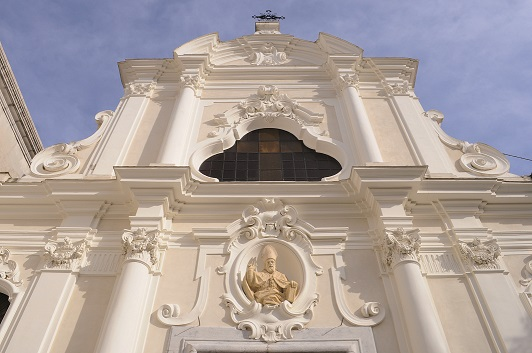
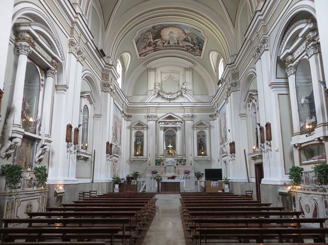

Approfondimenti

Il Campanile
Maestoso e costruito in tufo, rappresenta uno degli elementi più antichi, risalente al periodo romanico.

Gli Interni Barocchi
Decorati con stucchi, affreschi e opere d’arte in marmo policromo. Un patrimonio artistico unico nel suo genere.

Festa di San Prisco
Ogni 9 maggio, la città celebra il suo patrono con processioni e celebrazioni liturgiche.